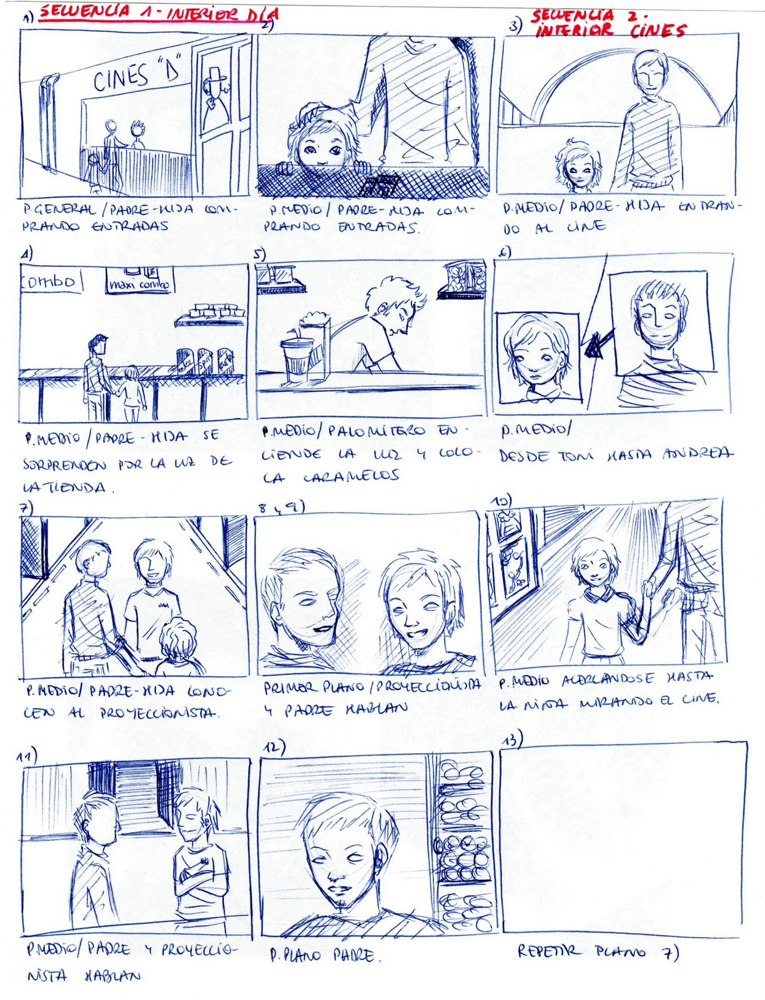
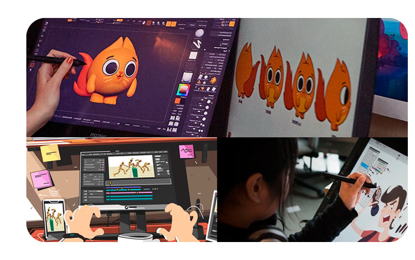

¿Qué es la Autoría en Elementos Multimedia?
La autoría en elementos multimedia se refiere a la creación y producción de contenido digital que combina texto, imágenes, audio, video y otros elementos interactivos. En este contexto, la autoría implica la planificación, diseño y desarrollo de contenido multimedia que puede ser utilizado para diversos fines, como la educación, la publicidad, el entretenimiento o la información.
Objetivos de la Autoría
La importancia de la autoría en el ámbito digital no puede subestimarse, ya que va más allá de ser simplemente una firma en un contenido.
La autoría representa la huella única de un autor en el mundo digital, evidenciando no solo la calidad del material creado, sino también la experiencia y credibilidad del individuo detrás de un artículo.
- -Educar a los usuarios sobre un tema específico
- -Entretener mediante experiencias interactivas
- -Informar sobre productos, ideas o procesos
- -Promover marcas, servicios o causas
- -Mejorar la experiencia de usuario en plataformas digitales
Software de Autoría
El software de autoría es una herramienta que permite a los creadores de contenido diseñar y desarrollar elementos multimedia sin necesidad de tener conocimientos avanzados de programación.
- Adobe Captivate – Para e-learning interactivo
- Articulate Storyline – Cursos multimedia personalizados
- Lectora Inspire – Cursos responsivos con multimedia
- Adobe Animate – Animaciones interactivas y banners
- Unity – Juegos y simulaciones 3D



Tipos de Software de Autoría
Existen varios tipos de software de autoría, cada uno con sus propias características y funcionalidades.
- E-learning: Tutoriales, cursos en línea (Captivate, Storyline)
- Juegos: Videojuegos y mecánicas interactivas (Unity)
- Simulaciones: Entrenamientos y procesos simulados
Software de Originalidad
El software de originalidad es una herramienta que ayuda a detectar plagio y garantizar la originalidad del contenido. Esto se logra mediante la comparación del contenido con una base de datos de textos y fuentes en línea.
- -Turnitin
- -Quetext
- -PlagScan
Proceso de Registro de Autoría
- 1- Crear un cuenta: en la oficina de derechos de autor correspondiente.
- 2- Preparar el material: que se desea registrar, incluyendo el contenido y la documentación necesaria.
- 3- Presentar la solicitud: de registro de autoría y pagar la tarifa correspondiente.
- 4- Esperar la aprobación: del registro de autoría.
Beneficios del Registro
- -Protección legal: contra el plagio y la infracción de derechos de autor.
- -Reconocimiento: de la autoría y la propiedad intelectual.
- -Valor comercial y reputacional del contenido creado
Conclusión
La autoría multimedia requiere creatividad, técnica y protección. El uso de software especializado y el registro de derechos son esenciales para producir y preservar contenido digital de valor.
Bibliografía
- "Autoría y derechos de autor en la era digital" - OMPI
- "Software de autoría para e-learning" - Adobe Captivate
- "Cómo funciona el software de originalidad" - Turnitin